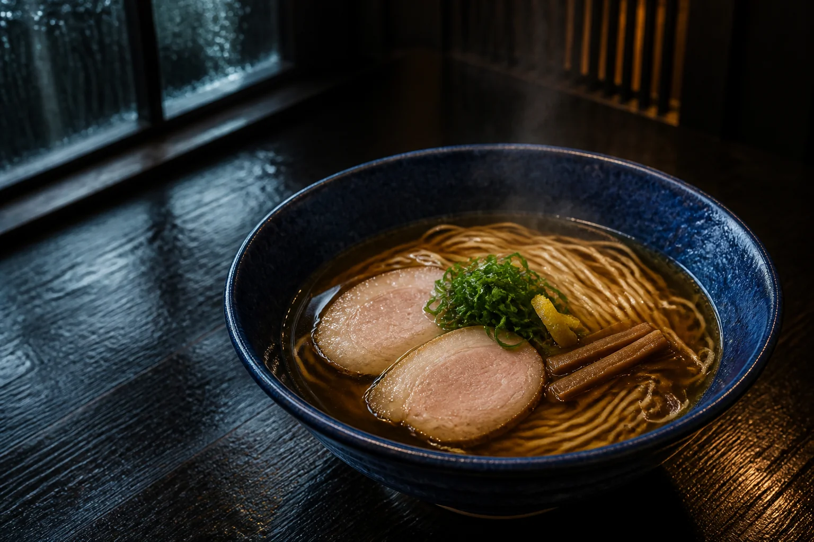

架空中華そば店・鹿児島
雨上がりに、 心を整える一杯。
深い青の器に、澄んだ琥珀のスープ。
急がない時間を、どうぞ。
- 昼
- 11:00–15:00
- 夜
- 18:00–21:00
- 休
- 水曜日
Our bowl / 私たちの一杯
青に沈み、
琥珀にほどける。
強さではなく、澄み方で記憶に残る。そんな一杯を目指しています。
鶏と魚介をゆっくり重ねた清湯に、香りの輪郭だけを残す醤油だれ。細麺をすすったあと、青い器の底に小さな光が残ります。
雨の日も、晴れの日も。暖簾の先で、日々を少し整える時間を用意してお待ちしています。
一杯に、余白を。 琥珀と青の仕立て
From blue to amber
一杯ができるまでSeason note / 季節の便り
雨あがりの、
青柚子。
Access / 店舗案内
暖簾をくぐるまで。
- 住所
- 鹿児島県架空市青町 1-7-5
- 営業時間
- 11:00–15:00 / 18:00–21:00
- 定休日
- 水曜日
- 席数
- カウンター 10席
この住所・営業時間・店舗情報はすべて架空です。実在の店舗とは関係ありません。
Before your visit / ご来店前に
よくあるご質問
予約なしでも利用できますか？
はい。架空設定上では当日席もご用意しています。混雑時はお待ちいただく場合があります。
子どもと一緒に入れますか？
カウンターのみの小さな店という設定です。小さなお子さま用の椅子は用意していません。
予約フォームから本当に送信されますか？
いいえ。このサイトはポートフォリオ用デモのため、入力内容は保存・送信されません。
Reservation demo / 予約デモ
一席、
とっておきます。
ご希望を入力すると、予約完了までの動きを体験できます。入力内容が外部へ送信されることはありません。
- 入力はこのブラウザ内だけで処理
- 個人情報の保存・送信なし
- 送信後にデモ完了メッセージを表示